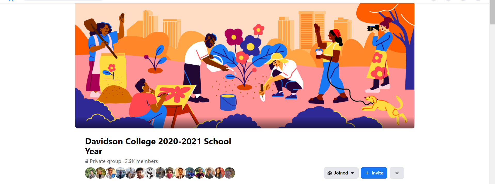
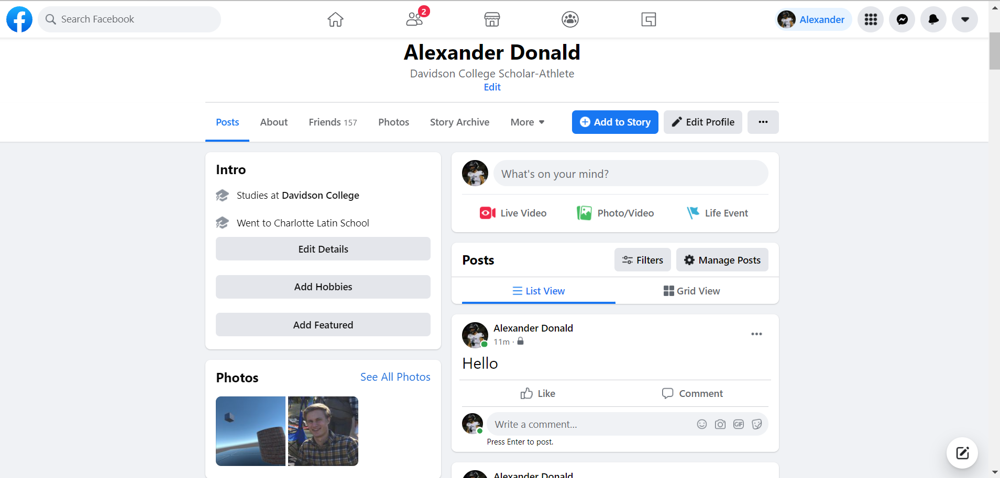
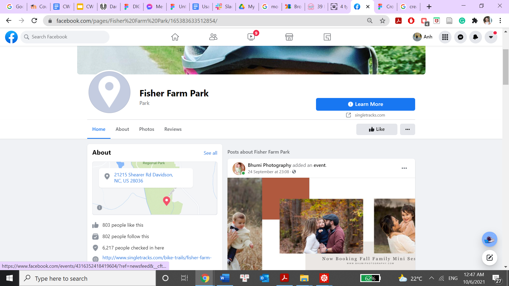
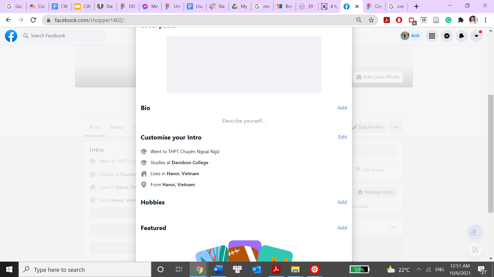

Usability Test
Test 1: Check Notifications
Time completed: 23.7s
The tester knew how to check all notifications.

Test 2: Go To Davidson 20-21 Facebook Group
Time completed: 20s
The tester moved immediately to the search bar. He found the Davidson Facebook group without any difficulty.
Test 3: Post Something On Your Feed And Set It To Private
Time completed: 2:23s
The tester struggled to find where to start his post. After a while, he managed to start a post through the menu button. He also knew how to set the post to only me with no difficulty.
Test 4: Find a page called “Fisher Farm”
Time completed: 42s
The tester went directly to the search box and searched the word ‘Fisher Farm’. He had a bit of a delay when seeing multiple results of pages with the same name. He clicked on the first profile, went back, and found the Fisher Farm page from Davidson, NC.
Test 5: Add A Detail To Your Profile
Time completed: 35s
The tester went directly to his profile and clicked on the “Edit Profile” button. He changed his bio without any difficulty.
Overview
How did the tester feel?
He felt good for the most part. However, creating a post was a frustrating experience. He felt that even though the feature was the main focus of Facebook, but it took a couple of minutes to find where the post button was. He didn’t see it on the page. Buttons that looked like they had potentials didn’t work.
Recommendations
- Clearer posting methods
- Addition of “add post” label or button near the “Posts” section